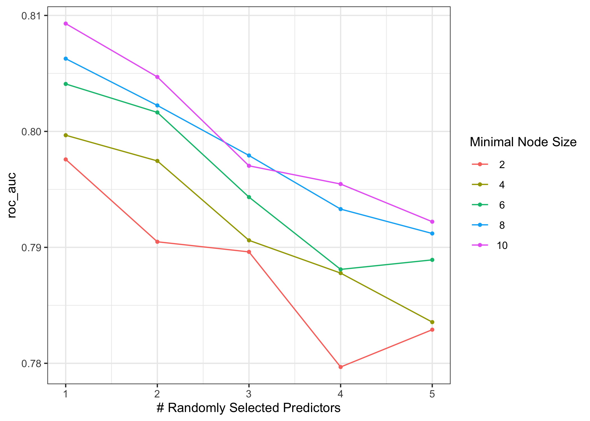

# Packages for this exercise. If one is missing, remove the # and run this line once:
# install.packages(c("tidyverse", "tidymodels", "ranger"))
library(tidyverse)
library(tidymodels)
theme_set(theme_bw()) # white background for every plot
options(pillar.sigfig = 3) # show three significant figures in tablesExercise 5.5 — Random forests and tuning with a workflow
A single decision tree is easy to read but unstable: a few different people in the training rows can give a very different tree, and a deep tree overfits. A random forest grows hundreds of trees, each on a different bootstrap sample of the training rows and each allowed to look at only a random subset of the predictors at every split, and averages their votes. The averaging cancels much of the noise that each single tree has memorised.
Goal. In this exercise you will:
- fit a random forest classifier to the diabetes data;
- tune its key hyperparameters with a workflow (R) or a pipeline search (Python);
- compare training and test performance;
- reflect on what workflows and pipelines give you.
NoteThe plots are for looking at
The code for every plot is folded away just above it, in case you are curious, and all of it is in the notebook linked at the top of each tab. You are not expected to write it yourself.
Download this exercise as an R Markdown notebook (.Rmd): the text and every code cell of the R version, including the code for the plots, with the blanks left for you to fill in. Open it in RStudio and run it a chunk at a time.
Packages and data
The same 750 people as Exercises 5.3 and 5.4, from data/diabetes_clean.csv, with the five predictors pregnant, glucose, mass, pedigree and age (triceps, insulin and blood pressure are left out because a zero there means “not measured”). The outcome has the levels neg then pos.
diabetes <- read_csv("data/diabetes_clean.csv") |>
select(pregnant, glucose, mass, pedigree, age, diabetes) |>
mutate(diabetes = factor(diabetes, levels = c("neg", "pos")))We split the 750 people into a training set and a test set, as in earlier exercises: 80% for training and 20% held back as the test set, 600 and 150 people. set.seed(42) makes the random split the same every time.
set.seed(42)
split <- initial_split(diabetes, prop = 0.8)
train <- training(split)
test <- testing(split)Part 1 — A random forest with tunable hyperparameters
rand_forest() with the ranger engine. Two hyperparameters are marked with tune(), to be chosen by the search, and one is fixed:
mtry: the number of predictors drawn at random as candidates at each split (1 to 5 here);min_n: the minimum number of people a node must hold to be split;trees: the number of trees, fixed at 500.
The names of the hyperparameters depend on the model and the engine; the parsnip page for ranger lists them.
rf_spec <- rand_forest(mtry = tune(), min_n = tune(), trees = 500) |>
set_engine("ranger") |>
set_mode("classification")
rf_rec <- recipe(diabetes ~ ., data = train)
rf_wf <- workflow() |>
add_model(rf_spec) |>
add_recipe(rf_rec)
rf_wf#> ══ Workflow ════════════════════════════════════════════════════════════════════
#> Preprocessor: Recipe
#> Model: rand_forest()
#>
#> ── Preprocessor ────────────────────────────────────────────────────────────────
#> 0 Recipe Steps
#>
#> ── Model ───────────────────────────────────────────────────────────────────────
#> Random Forest Model Specification (classification)
#>
#> Main Arguments:
#> mtry = tune()
#> trees = 500
#> min_n = tune()
#>
#> Computational engine: ranger
ImportantLearning points
- A random forest averages many trees, each grown on a bootstrap sample with a random subset of predictors at every split.
mtry(max_features) controls how different the trees are from each other;min_n(min_samples_split) how far each tree may grow.
Part 2 — The grid, the folds and the search
Five values of mtry and five of min_n, 25 combinations:
rf_grid <- grid_regular(mtry(range = c(1L, 5L)),
min_n(range = c(2L, 10L)),
levels = 5)
rf_grid#> # A tibble: 25 × 2
#> mtry min_n
#> <int> <int>
#> 1 1 2
#> 2 2 2
#> 3 3 2
#> 4 4 2
#> 5 5 2
#> 6 1 4
#> 7 2 4
#> 8 3 4
#> 9 4 4
#> 10 5 4
#> # ℹ 15 more rowsEach combination is judged by 5-fold cross-validation on the training rows, as in Exercise 5.4: 25 combinations times 5 folds is 125 forests of 500 trees, which takes a few seconds. set.seed() fixes the folds and the forests’ random draws.
set.seed(123)
folds <- vfold_cv(train, v = 5, strata = diabetes)
rf_res <- tune_grid(
rf_wf,
resamples = folds,
grid = rf_grid,
metrics = metric_set(accuracy, roc_auc),
control = control_grid(event_level = "second")
)
rf_metrics <- collect_metrics(rf_res)
rf_metrics#> # A tibble: 50 × 8
#> mtry min_n .metric .estimator mean n std_err .config
#> <int> <int> <chr> <chr> <dbl> <int> <dbl> <chr>
#> 1 1 2 accuracy binary 0.722 5 0.0117 pre0_mod01_post0
#> 2 1 2 roc_auc binary 0.798 5 0.0163 pre0_mod01_post0
#> 3 1 4 accuracy binary 0.732 5 0.0140 pre0_mod02_post0
#> 4 1 4 roc_auc binary 0.800 5 0.0159 pre0_mod02_post0
#> 5 1 6 accuracy binary 0.738 5 0.0148 pre0_mod03_post0
#> 6 1 6 roc_auc binary 0.804 5 0.0144 pre0_mod03_post0
#> 7 1 8 accuracy binary 0.740 5 0.0116 pre0_mod04_post0
#> 8 1 8 roc_auc binary 0.806 5 0.0151 pre0_mod04_post0
#> 9 1 10 accuracy binary 0.742 5 0.00972 pre0_mod05_post0
#> 10 1 10 roc_auc binary 0.809 5 0.0139 pre0_mod05_post0
#> # ℹ 40 more rows
ImportantLearning points
- A grid search fits one model per combination and fold; keep the grid small and the number of trees modest.
- Cross-validation uses the training rows only; the test rows stay untouched.
Part 3 — Inspect the tuning results
Plot the cross-validated AUC of every combination:
autoplot(rf_res, metric = "roc_auc")
Now list the five best combinations by AUC:
# Replace every ______ below, then run this cell.
rf_metrics |>
filter(.metric == ______) |>
arrange(desc(______)) |>
head(5)Question! Which combinations of mtry and min_n seem to work best? Do more flexible forests (more predictors per split, smaller nodes) always perform better? How large are the differences compared with the standard errors?
ImportantLearning points
- Look at the whole grid, not only the winner: here many combinations are within one standard error of the best.
- Small
mtrymakes the trees more different from one another, which is what makes averaging them work.
Part 4 — The final forest, evaluated once
Select the best combination by AUC, put it into the workflow, and fit one final forest on all 600 training rows:
best_rf <- select_best(rf_res, metric = "roc_auc")
best_rf#> # A tibble: 1 × 3
#> mtry min_n .config
#> <int> <int> <chr>
#> 1 1 10 pre0_mod05_post0final_rf_wf <- finalize_workflow(rf_wf, best_rf)
set.seed(123)
final_rf_fit <- final_rf_wf |>
fit(data = train)Predict both sets and compute the metrics, starting with the training rows:
train_preds <- predict(final_rf_fit, new_data = train, type = "prob") |>
bind_cols(predict(final_rf_fit, new_data = train, type = "class")) |>
bind_cols(train)
test_preds <- predict(final_rf_fit, new_data = test, type = "prob") |>
bind_cols(predict(final_rf_fit, new_data = test, type = "class")) |>
bind_cols(test)
class_metrics <- metric_set(accuracy, precision, recall, sens, spec)
class_metrics(train_preds, truth = diabetes, estimate = .pred_class,
event_level = "second")#> # A tibble: 5 × 3
#> .metric .estimator .estimate
#> <chr> <chr> <dbl>
#> 1 accuracy binary 0.923
#> 2 precision binary 0.917
#> 3 recall binary 0.867
#> 4 sens binary 0.867
#> 5 spec binary 0.955roc_auc(train_preds, truth = diabetes, .pred_pos, event_level = "second")#> # A tibble: 1 × 3
#> .metric .estimator .estimate
#> <chr> <chr> <dbl>
#> 1 roc_auc binary 0.983Now the test rows:
# Replace every ______ below, then run this cell.
class_metrics(______, truth = diabetes, estimate = .pred_class,
event_level = "second")
roc_auc(______, truth = diabetes, .pred_pos, event_level = "second")Forests are random (the split, bootstrap samples, predictor subsets, folds), and R and Python draw different random numbers, so the two languages do not give the same forest or exactly the same numbers.
Question! Is there still a big gap between training and test performance? A forest predicts its own training rows with trees that have seen most of them, so its training performance is always flattering: judge it on the test rows or by cross-validation.
ImportantLearning points
- Finalise: put the best hyperparameters into the workflow and fit once on all the training rows.
- A forest’s training performance is close to perfect by construction; its test or cross-validated performance is the one to report.
- The test rows are used once, at the end.
Part 5 — Extra: was the tuning worth it?
Fit a basic forest with the default hyperparameters (ranger chooses mtry as the square root of the number of predictors, rounded down: 2) and compare it on the test rows with the tuned forest. The Python tab does the same with scikit-learn’s defaults; open it to compare the code.
set.seed(123)
rf_basic_fit <- workflow() |>
add_model(rand_forest(mode = "classification") |> set_engine("ranger")) |>
add_recipe(rf_rec) |>
fit(data = train)
test_preds_basic <- predict(rf_basic_fit, new_data = test, type = "prob") |>
bind_cols(predict(rf_basic_fit, new_data = test, type = "class")) |>
bind_cols(test)
class_metrics(test_preds_basic, truth = diabetes, estimate = .pred_class,
event_level = "second")#> # A tibble: 5 × 3
#> .metric .estimator .estimate
#> <chr> <chr> <dbl>
#> 1 accuracy binary 0.74
#> 2 precision binary 0.648
#> 3 recall binary 0.636
#> 4 sens binary 0.636
#> 5 spec binary 0.8roc_auc(test_preds_basic, truth = diabetes, .pred_pos, event_level = "second")#> # A tibble: 1 × 3
#> .metric .estimator .estimate
#> <chr> <chr> <dbl>
#> 1 roc_auc binary 0.756The untuned forest does almost as well as the tuned one on the test rows: test AUC 0.756 against 0.766, and the same test accuracy, 0.740. The cross-validated AUCs of the whole grid lay within about 0.03 of each other, about two standard errors, and 150 test patients cannot tell differences that small apart. Tuning is still the right procedure; here it has little to find.
Question! Why pipelines? Look back at the code of this exercise and of Exercise 5.4.
- What do workflows (R) and pipelines (Python) give you, compared with writing the model, the formula, the pre-processing and the predictions separately by hand?
- How does a workflow help when you change the model, say from a tree to a random forest to a logistic regression? Which lines changed between Exercise 5.4 and this one?
- How does it help when you add pre-processing steps such as scaling, imputation or dummy variables, especially during cross-validation, where those steps must be learned again on each fold’s training part?
ImportantLearning points
- Compare a tuned model with the untuned default: tuning costs time and does not always pay.
- A workflow or pipeline keeps pre-processing and model together, so changing either is one line, and cross-validation repeats both on every fold.
Download this exercise as a Jupyter notebook (.ipynb): the text and every code cell of the Python version, including the code for the plots, with the blanks left for you to fill in. Open it in Jupyter or VS Code and run it a cell at a time.
Packages and data
# Packages for this exercise. If one is missing, install it once from a terminal
# (in a Jupyter notebook, type %pip instead of pip):
# pip install pandas numpy matplotlib scikit-learn
import pandas as pd
import numpy as np
import matplotlib.pyplot as plt
from sklearn.ensemble import RandomForestClassifier
from sklearn.model_selection import GridSearchCV, train_test_split
from sklearn.metrics import accuracy_score, precision_score, recall_score
from sklearn.metrics import roc_auc_score, classification_reportThe same 750 people as Exercises 5.3 and 5.4, from data/diabetes_clean.csv, with the five predictors pregnant, glucose, mass, pedigree and age (triceps, insulin and blood pressure are left out because a zero there means “not measured”). The outcome is 1 for pos and 0 for neg.
diabetes = pd.read_csv("data/diabetes_clean.csv")
diabetes = diabetes[["pregnant", "glucose", "mass", "pedigree", "age", "diabetes"]]
diabetes["diabetes"] = (diabetes["diabetes"] == "pos").astype(int) # 1 = pos, 0 = neg
predictors = ["pregnant", "glucose", "mass", "pedigree", "age"]We split the 750 people into a training set and a test set, as in earlier exercises: 80% for training and 20% held back as the test set, 600 and 150 people. random_state=42 makes the random split the same every time.
train, test = train_test_split(diabetes, test_size=0.2, random_state=42)Part 1 — A random forest with tunable hyperparameters
RandomForestClassifier(), with the number of trees fixed at 500, random_state fixed so that the forest is the same every time, and n_jobs=-1 to use all the computer’s cores. Two hyperparameters will be chosen by the search:
max_features: the number of predictors drawn at random as candidates at each split (1 to 5 here), calledmtryin R;min_samples_split: the minimum number of people a node must hold to be split, calledmin_nin R.
rf = RandomForestClassifier(n_estimators=500, random_state=123, n_jobs=-1)
print(rf)#> RandomForestClassifier(n_estimators=500, n_jobs=-1, random_state=123)
ImportantLearning points
- A random forest averages many trees, each grown on a bootstrap sample with a random subset of predictors at every split.
mtry(max_features) controls how different the trees are from each other;min_n(min_samples_split) how far each tree may grow.
Part 2 — The grid, the folds and the search
Five values of max_features and five of min_samples_split, 25 combinations:
rf_grid = {"max_features": [1, 2, 3, 4, 5],
"min_samples_split": [2, 4, 6, 8, 10]}Each combination is judged by 5-fold cross-validation on the training rows, as in Exercise 5.4: 25 combinations times 5 folds is 125 forests of 500 trees. The forest was created with n_jobs=-1, which grows its trees on all the computer’s cores at once and makes the search several times faster.
rf_search = GridSearchCV(rf, param_grid=rf_grid, cv=5, scoring="roc_auc")
rf_search = rf_search.fit(train[predictors], train["diabetes"])
rf_results = pd.DataFrame(rf_search.cv_results_)
rf_results = rf_results[["param_max_features", "param_min_samples_split",
"mean_test_score", "std_test_score"]]
print(rf_results.round(3).to_string())#> param_max_features param_min_samples_split mean_test_score std_test_score
#> 0 1 2 0.791 0.033
#> 1 1 4 0.793 0.033
#> 2 1 6 0.797 0.033
#> 3 1 8 0.800 0.034
#> 4 1 10 0.800 0.032
#> 5 2 2 0.789 0.034
#> 6 2 4 0.791 0.035
#> 7 2 6 0.794 0.034
#> 8 2 8 0.796 0.037
#> 9 2 10 0.799 0.033
#> 10 3 2 0.785 0.035
#> 11 3 4 0.789 0.031
#> 12 3 6 0.792 0.033
#> 13 3 8 0.794 0.033
#> 14 3 10 0.794 0.034
#> 15 4 2 0.783 0.033
#> 16 4 4 0.784 0.029
#> 17 4 6 0.788 0.032
#> 18 4 8 0.790 0.034
#> 19 4 10 0.794 0.036
#> 20 5 2 0.779 0.030
#> 21 5 4 0.780 0.031
#> 22 5 6 0.784 0.033
#> 23 5 8 0.787 0.034
#> 24 5 10 0.790 0.034
ImportantLearning points
- A grid search fits one model per combination and fold; keep the grid small and the number of trees modest.
- Cross-validation uses the training rows only; the test rows stay untouched.
Part 3 — Inspect the tuning results
Plot the cross-validated AUC of every combination:
fig, ax = plt.subplots()
for split in rf_grid["min_samples_split"]:
rows = rf_results[rf_results["param_min_samples_split"] == split]
ax.plot(rows["param_max_features"], rows["mean_test_score"], marker="o", label=str(split))
ax.set_xlabel("max_features (mtry)")
ax.set_ylabel("Mean cross-validated AUC")
ax.legend(title="min_samples_split")
plt.show()
Now list the five best combinations by AUC:
# Replace every ______ below, then run this cell.
rf_results.sort_values(______, ascending=False).head(5).round(3)Question! Which combinations of mtry and min_n seem to work best? Do more flexible forests (more predictors per split, smaller nodes) always perform better? How large are the differences compared with the standard errors?
ImportantLearning points
- Look at the whole grid, not only the winner: here many combinations are within one standard error of the best.
- Small
mtrymakes the trees more different from one another, which is what makes averaging them work.
Part 4 — The final forest, evaluated once
The best combination by AUC. GridSearchCV() has already refitted a forest with it on all 600 training rows (refit=True is the default):
print(rf_search.best_params_)#> {'max_features': 1, 'min_samples_split': 10}print("cross-validated AUC:", round(rf_search.best_score_, 3))#> cross-validated AUC: 0.8
final_rf = rf_search.best_estimator_Predict both sets and compute the metrics, starting with the training rows:
train_preds = train.copy()
train_preds["prob"] = final_rf.predict_proba(train[predictors])[:, 1]
train_preds["pred_class"] = final_rf.predict(train[predictors])
test_preds = test.copy()
test_preds["prob"] = final_rf.predict_proba(test[predictors])[:, 1]
test_preds["pred_class"] = final_rf.predict(test[predictors])
truth, predicted = train_preds["diabetes"], train_preds["pred_class"]
print("train accuracy: ", round(accuracy_score(truth, predicted), 3))#> train accuracy: 0.892print("train precision: ", round(precision_score(truth, predicted), 3))#> train precision: 0.904print("train sensitivity:", round(recall_score(truth, predicted), 3))#> train sensitivity: 0.782print("train specificity:", round(recall_score(truth, predicted, pos_label=0), 3))#> train specificity: 0.953print("train AUC: ", round(roc_auc_score(truth, train_preds["prob"]), 3))#> train AUC: 0.974Now the test rows:
# Replace every ______ below, then run this cell.
truth, predicted = ______, test_preds["pred_class"]
print("test accuracy: ", round(accuracy_score(truth, predicted), 3))
print("test precision: ", round(precision_score(truth, predicted), 3))
print("test sensitivity:", round(recall_score(truth, predicted), 3))
print("test specificity:", round(recall_score(truth, predicted, pos_label=0), 3))
print("test AUC: ", round(roc_auc_score(truth, ______), 3))Forests are random (the split, bootstrap samples, predictor subsets, folds), and R and Python draw different random numbers, so the two languages do not give the same forest or exactly the same numbers.
Question! Is there still a big gap between training and test performance? A forest predicts its own training rows with trees that have seen most of them, so its training performance is always flattering: judge it on the test rows or by cross-validation.
ImportantLearning points
- Finalise: put the best hyperparameters into the workflow and fit once on all the training rows.
- A forest’s training performance is close to perfect by construction; its test or cross-validated performance is the one to report.
- The test rows are used once, at the end.
Part 5 — Extra: was the tuning worth it?
Fit a basic forest with scikit-learn’s default hyperparameters (100 trees, nodes split down to 2 people, max_features the square root of the number of predictors: 2) and compare it on the test rows with the tuned forest. classification_report() prints the precision and recall of each class in one table; the recall of class 0 is the specificity.
rf_basic = RandomForestClassifier(random_state=123)
rf_basic = rf_basic.fit(train[predictors], train["diabetes"])
basic_class = rf_basic.predict(test[predictors])
basic_prob = rf_basic.predict_proba(test[predictors])[:, 1]
print("basic forest, test accuracy:", round(accuracy_score(test["diabetes"], basic_class), 3))#> basic forest, test accuracy: 0.72print("basic forest, test AUC: ", round(roc_auc_score(test["diabetes"], basic_prob), 3))#> basic forest, test AUC: 0.79print(classification_report(test["diabetes"], basic_class, digits=3))#> precision recall f1-score support
#>
#> 0 0.734 0.860 0.792 93
#> 1 0.683 0.491 0.571 57
#>
#> accuracy 0.720 150
#> macro avg 0.708 0.676 0.682 150
#> weighted avg 0.715 0.720 0.708 150The tuned forest does a little better than the untuned one on the test rows: test AUC 0.814 against 0.790, test accuracy 0.747 against 0.720. The cross-validated AUCs of the whole grid lay within about 0.02 of each other, about one or two standard errors, and 150 test patients cannot tell differences that small apart with confidence. Tuning is the right procedure, but here it has little to find.
Question! Why pipelines? Look back at the code of this exercise and of Exercise 5.4.
- What do workflows (R) and pipelines (Python) give you, compared with writing the model, the formula, the pre-processing and the predictions separately by hand?
- How does a workflow help when you change the model, say from a tree to a random forest to a logistic regression? Which lines changed between Exercise 5.4 and this one?
- How does it help when you add pre-processing steps such as scaling, imputation or dummy variables, especially during cross-validation, where those steps must be learned again on each fold’s training part?
ImportantLearning points
- Compare a tuned model with the untuned default: tuning costs time and does not always pay.
- A workflow or pipeline keeps pre-processing and model together, so changing either is one line, and cross-validation repeats both on every fold.
Stretch
NoteStretch — the forest against the logistic regression
Exercise 5.3 fitted a logistic regression on the same five predictors and the same split. Put its test AUC next to the tuned forest’s. Which model would you take to a clinic, and what besides the AUC would you weigh?